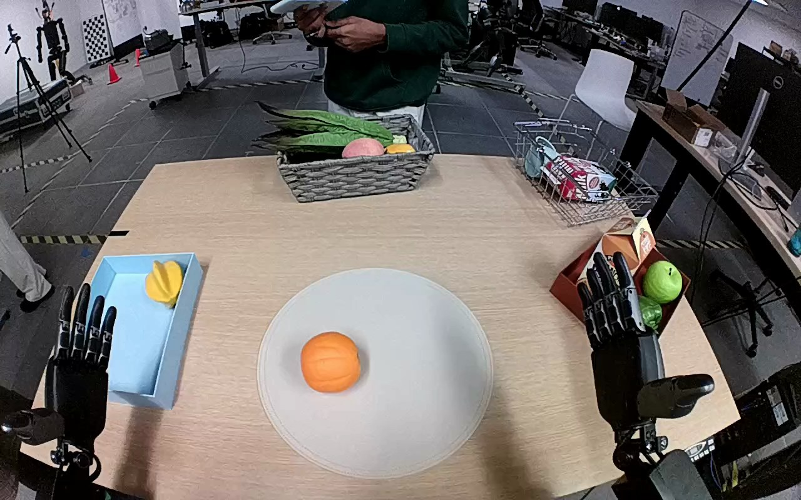

NVIDIA GR1 · 36
Video 36

Visual review action_review.json
{
"prompt_protocol": "humanoid_action_v1",
"prompt_provenance": "visually_authored_from_video_and_initial_frame",
"reviewed_contact_sheets": [
"sheet_001.jpg"
],
"inspected_frame_stride": 2,
"inspected_sampled_frame_count": 60,
"initial_scene": "Egocentric forward-and-downward view over a table. An orange is centered on a circular gray mat. A light blue open box with a yellow fruit is on the robot left. Both robot forearms enter from the near edge; both hands are initially open.",
"observed_sequence": [
{
"source_frame_interval": [
0,
17
],
"action": "Both hands remain open above the table; the orange rests on the circular mat.",
"confidence": "high"
},
{
"source_frame_interval": [
18,
47
],
"action": "Left forearm moves inward toward the orange; left hand turns with open fingers and thumb positioned on opposing sides of the orange. Right hand stays raised near the right-side objects without contacting the target.",
"confidence": "high"
},
{
"source_frame_interval": [
48,
70
],
"action": "Left hand settles around the orange, then curls the fingers and thumb to secure it. The orange remains over the mat during the initial closure.",
"confidence": "high"
},
{
"source_frame_interval": [
71,
88
],
"action": "The closed left hand lifts the orange clear of the mat and begins moving it leftward.",
"confidence": "high"
},
{
"source_frame_interval": [
89,
110
],
"action": "Left hand transports the held orange over the light blue box and lowers it into the near half of the box, beside the yellow fruit.",
"confidence": "high"
},
{
"source_frame_interval": [
111,
119
],
"action": "Left fingers and thumb open; the orange settles freely in the blue box as the hand moves away. The mat is empty and the orange remains in the box at the final frame.",
"confidence": "high"
}
],
"arm_hand_roles": {
"left": "Sole active manipulation hand: grasps the orange, lifts it, transports it into the light blue box, and releases it.",
"right": "Open hand stays raised to the right throughout; it neither grasps the orange nor stabilizes the box.",
"coordination": "Single-hand manipulation with no hand-to-hand transfer or assisting contact."
},
"anatomical_side_evidence": {
"description": "The camera is on the robot side of the table looking forward and down: robot forearms enter the lower-left and lower-right edges, with the person across the table facing the robot. The manipulating forearm stays connected to the robot left-side entry, and its thumb/finger arrangement is consistent with the left hand. The other forearm remains on the robot right. This is an embodied camera view, not a front-facing view in which image sides would be reversed.",
"confidence": "high",
"uncertainty": null
},
"terminal_state": "Orange released and resting inside the light blue box beside the yellow fruit; left fingers open and separating from it. Circular gray mat empty. Right hand remains open with no task contact.",
"uncertainties": [],
"annotation_discrepancies": [],
"evidence_frame_indices": [
0,
40,
60,
72,
82,
100,
110,
116,
119
],
"selected_execution_status": "success",
"video_id": "36",
"dataset": "NVIDIA_GR1_100",
"dedicated_review_agent": "review_gr1_36",
"review_source_video": "NVIDIA_GR1_100/36/original/original.mp4",
"source_frame_count": 120,
"source_fps": 20.0,
"native_detail_frames": [
40,
60,
72,
82,
100,
110,
116,
119
],
"world_model_prompt": "Using its left hand, the robot grasps the orange on the circular gray mat and lifts it clear. It carries the orange to the light blue box, lowers it beside the yellow fruit, and opens its fingers to release it inside the box. Keep the camera fixed; preserve robot geometry, physically valid joint motion, and normal gripper opening and closing.",
"original_task_instruction": "Use the left hand to pick up orange from circular gray mat to light blue box.",
"selected_segment": {
"start_frame": 0,
"end_frame_exclusive": 120,
"reason": "Complete original single-task reference; no cropping or trimming requested."
},
"source_video_sha256": "d21ee96076aba57c1fffd3fb41ea738a7bae9d52e22095362483af29bf19d016",
"review_completed_at": "2026-10-13T17:59:34.490547+00:00"
}